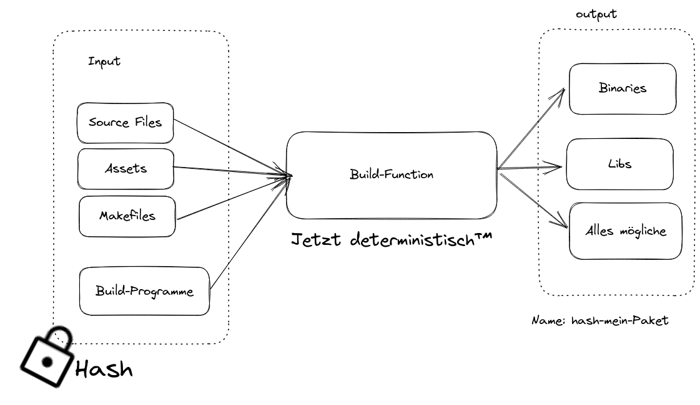

NixOS Intro
$ whomai
- Felix Ulonska (Jabbi) er/ihm
- Aktuell: Computer Science Master Bonn
- $dev @ devsaur
- verwende NixOS seit etwa 1 Jahr
- Redet sehr gerne über NixOS
Naming is easy
 Source: https://www.reddit.com/r/NixOS/comments/rffnx8/who_says_the_naming_is_confusing/
Source: https://www.reddit.com/r/NixOS/comments/rffnx8/who_says_the_naming_is_confusing/
Wie man bisher Packages macht

In Nix

- Build-Funktion ist determinitisch™:
- Internetverbindung deaktiviert
- Die Umgebungsvariablen $HOME und $PATH sind auf bestimmte Werte festgelegt
- Der Build-Ornder ist ein temporäres Verzeichnis.
- Der Zeitstempel für den Build-Ausgabepfad wird auf 1-1-1970 zurückgesetzt.
- Stellt reproduzierbaren Output sicher
Runtime Dependencies
Enough Nix Lang to be dangorous
- Programmiersprache für NixOS
-
Lazy
let a = abort "will never happen"; b = "hello"; c = "world"; in b + c -
Pure:
Es gibt keine Seiteneffekt: Output einer Funktion hängt nur vom Input ab - Functional
- Syntax: JSONs und Haskell gemeinsames Kind
let a = rec {
myString = "Hallo Warpzone";
myNumber = 12;
myPath = ./cooleConfig; # Relativer Pfad
githubLink = github:NixOS/nixpkgs;
myList = [ 1 myPath ./einAndereDatei "Anderes Element"];
}
in a.myList[ 1 2 3 4 5 ]Funktionen
Simples Lambda
let
inc = x: x + 1;
in (inc (inc 1))
3Weiteres Lambda
let
sum = x: y: x + y;
in (sum 1 3)
4Named Funktionen
let sum = { x, y }: x + y;
in sum {x = 12; y = 32;}44let sum = { x, y ? 1, ... }: x + y;
in sum { x = 32; z = 12;}33With
mySet = {elem1 = 12; elem2 = "Test";}with a; [elem1];[a.elem1];Wir schreiben unser erster Paket
fn main() {
println!("Hello Kamphack!");
}# default.nix
with import <nixpkgs> {}; # STD-Library
stdenv.mkDerivation {
name = "helloWorld Rust";
src = ./.;
buildInputs = [ pkgs.rustc ];
buildPhase = ''
rustc helloWorld.rs
'';
installPhase = ''
mkdir -p $out/bin
cp helloWorld $out/bin/helloWorld
'';
}nix-build . /nix/store/6pbrmqzxghpd94v86knj821rij2zs23b-helloWorld-Rust$ tree -l
.
├── default.nix
├── helloWorld.rs
└── result -> /nix/store/51d486dsfi4v3ly5pixvyyj10sc8k16n-helloWorld-Rust
└── bin
└── helloWorld
2 directories, 3 files
/nix/store
- Enthält alle vom Nix-Paketmanager verwalteten Pakete und Dateien
- Einzigartige Namenskonvention für jedes Paket:
/nix/store/38in4n9cz6alhyc0hbb7g2yfsg7cgf8q-firefox-107.0 - Schreibgeschützt, neue Versionen von Paketen werden als separate Einträge installiert.
- Falls Paket auf andere Pakete aufbaut mit kopiert werden
Was ist eigentlich diese Nixpkgs?
- Sammlung von Software-Paketen und Build-Beschreibungen
- Geschrieben in Nix Lang
- Mono GitHub-Repo
- mkDerivation Funktion
- Das GO-Paket
- Packages Suche
Wieso ist dann nicht langsam?
- Caching!
- Wir kennen den Hash, können also alles cachen
- Dicker Binary Cache
Power von Nix Packagemanager
- Batteries included: Bringt alle Libraries, wie libc, selber mit
- Unabhängig von NixOS
- Funktioniert auf fast allen Linux-Distros und Mac
$ sh <(curl -L https://nixos.org/nix/install) --daemonnix-Shell
$ nix-shell -p /nix/store/6pbrmqzxghpd94v86knj821rij2zs23b-helloWorld-Rust
$ helloWorld
Hallo KamphackErzeugt eine Bash-Shell in der das Nix-Package helloWorld. Fügt helloWorld in $PATH hinzu.
nix-env
Tool zum manipulieren von Nix Env$ nix-env -i /nix/store/6pbrmqzxghpd94v86knj821rij2zs23b-helloWorld-Rust
installing 'helloWorld-Rust'
building '/nix/store/j1sw6kfda5yin57xa0jsp6sirwlafs86-user-environment.drv'...
$ helloWorld
Hallo KamphackhelloWorld.
Jede Veränderung erzeugt eine neue Generation: Man kann zu jeder vorherigen zurück springen
NixOS
- Können wir nicht auch genauso Betriebssystem verwalten?
- System wäre determinitisch, zurück setzbar, etc.
- JA!
- Ein Paket: Unser System representiert
- In dem Paket
/etc,/bin,/lib, Kernel, Systemd Units, sym-links zu allen anderen Pakete, die bei boot gemounted werden
- Funktion, die ein Set übergeben bekommt
- Funktion baut daraus das Systempaket
Unsere erste NixOS-Configuration
Ein System besteht aus mehrern Modulen. Alle Module werde von dem Build-System aufgerufen. Ein Modul ist eine Funktion. Nix baut unser System entsprechend des Ergebnis der Funktion{ pkgs, ... }: {
imports = [
./hardware-configuration.nix
];
boot.loader.systemd-boot.enable = true; # (for UEFI systems only)
services.sshd.enable = true;
}- Funktionen geben ein Set zurück, dass die Informationen über das System enthält.